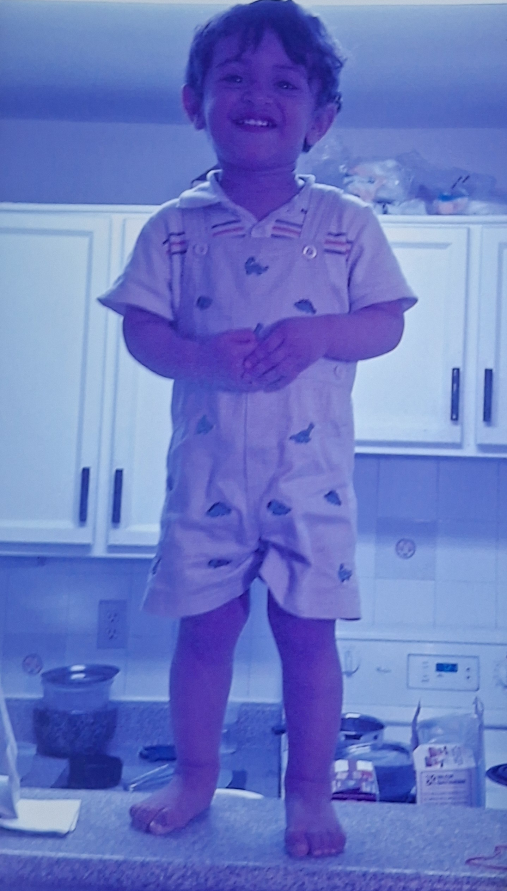
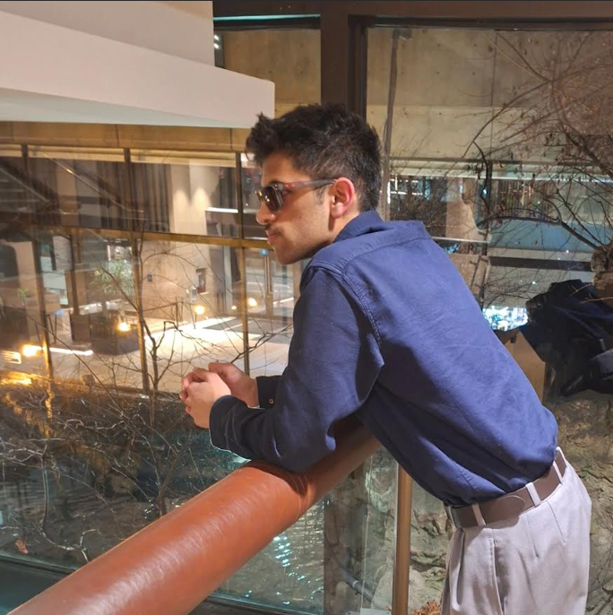

"Ever since I was a jit, I been legit" – Timeless by Playboi Carti

Even as a child, from what my family has told me, I was always a little bit of a troublemaker, and a little bit too energetic. Of course, that certainly hasn’t proven to be a bad thing in the long run. Since I was a kid I was nurtured, raised and taught most of what I know as a result of the time my mom, dad and sister sacrificed for me. I always thought I had a knack for numbers as a kid and as time has proven, I’ve upheld that standard for the most part.
While I did have my fair share of phases from my hotwheels phase to my dinosaur phase, I was always a happy and bright kid that would always try and bring a smile to people’s faces. Of course though, my chubby cheeks helped a lot with that too.
Since the age of 5, I’ve learned to love lots of things in my life from my parents to my teachers and my well-wishers but I also gained lots of hobbies from my early passion for cricket, piano and OF COURSE, eating. As any kid would however, I had my fair share of scrapes at school, from crashing headfirst into a metal fence in grade 1 breaking my nose to cutting off my finger in grade 4 to breaking my toe while jousting in grade 10.
These weren’t the only setbacks I faced during my childhood. I always had to deal with issues about my race, my religion and my unique differences. I never let these setbacks define me and always made it a point to move past them, stronger.

Fast forward to my life now, I’ve reached my peak years I would say, not just in terms of stature, academics and extra-curriculars, but as an individual. Although I have over-stressed myself with all my clubs which caused me to burnout early, I have hope that once I cool down again, I’ll be unstoppable once again.